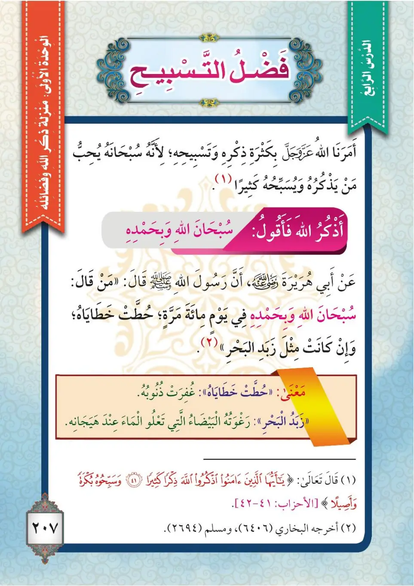
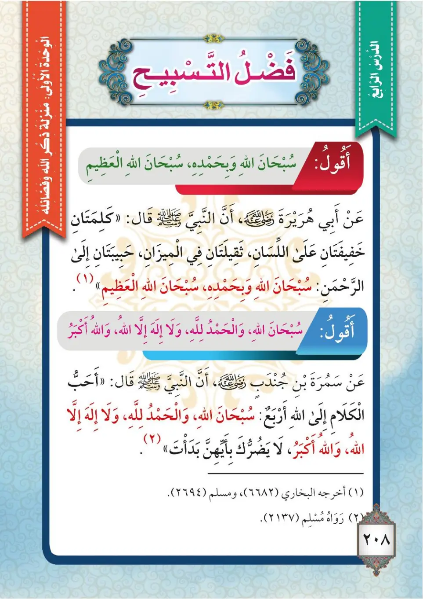

Stage 3·المرحلة الثالثة💬 Unit 1
التَّسْبِيحُ: سُبْحَانَ اللهِ Glorifying Allah: Subhanallah
From the Textbookpp. 208–209


مِنَ الْأَذْكَارِ الَّتِي وَرَدَتْ فِي الْقُرْآنِ وَالسُّنَّةِ أَنْ تُسَبِّحَ اللهَ تَعَالَى وَتَحْمَدَهُ وَتُكَبِّرَهُ، وَأَنْ تَقُولَ: سُبْحَانَ اللهِ، وَالْحَمْدُ لِلَّهِ، وَلَا إِلَهَ إِلَّا اللهُ، وَاللهُ أَكْبَرُ، وَلَا حَوْلَ وَلَا قُوَّةَ إِلَّا بِاللهِ، وَسُبْحَانَ اللهِ وَبِحَمْدِهِ، وَسُبْحَانَ اللهِ الْعَظِيمِ.
Mina al-adhkari allati waradat fi al-Qur'ani was-sunnati an tusabbiha Allaha ta'ala wa tahmadahu wa tukabbirahu, wa an taqula: Subhanallahi, wal-hamdu lillahi, wa la ilaha illallahu, wallahu akbaru, wa la hawla wa la quwwata illa billahi, wa Subhanallahi wa bihamdihi, wa Subhanallahi al-'Adhimi.
Among the adhkar that were reported in the Quran and the Sunnah is that you glorify Allah the Exalted, praise Him, and magnify Him, and that you say: Subhanallah, wal-hamdu lillah, wa la ilaha illallah, wallahu akbar, wa la hawla wa la quwwata illa billah, Subhanallah wa bihamdihi, Subhanallah al-'Adhim.
குர்ஆனிலும் சுன்னத்திலும் வந்துள்ள திக்ருகளில்: சுப்ஹானல்லாஹ், அல்ஹம்து லில்லாஹ், லா இலாஹ இல்லல்லாஹ், அல்லாஹு அக்பர், லா ஹவ்ல வ லா குவ்வத்த இல்லாபில்லாஹ், சுப்ஹானல்லாஹி வ பிஹம்திஹி, சுப்ஹானல்லாஹில் அழீம் எனக் கூறுவதாகும்.
عَنْ أَبِي هُرَيْرَةَ رَضِيَ اللهُ عَنْهُ قَالَ: قَالَ رَسُولُ اللهِ ﷺ: «مَنْ قَالَ سُبْحَانَ اللهِ وَبِحَمْدِهِ فِي يَوْمٍ مِائَةَ مَرَّةٍ، حَطَّتْ خَطَايَاهُ وَإِنْ كَانَتْ مِثْلَ زَبَدِ الْبَحْرِ». أَخْرَجَهُ الْبُخَارِيُّ.
'An Abi Hurairata radiyallahu 'anhu qal: qal rasulullahi ﷺ: «Man qala Subhanallahi wa bihamdihi fi yawmin mi'ata marratin, huttat khatayahu wa in kanat mithla zabadi al-bahri». Akhrajahu al-Bukhari.
Abu Hurairah, may Allah be pleased with him, said: The Messenger of Allah ﷺ said: "Whoever says Subhanallah wa bihamdihi one hundred times in a day, his sins will be removed even if they were as much as the foam of the sea." Narrated by Al-Bukhari.
அபூ ஹுரைரா (ரலி) கூறினார்கள்: "ஒரு நாளில் நூறு முறை 'சுப்ஹானல்லாஹி வபிஹம்திஹி' என்று கூறுபவரின் பாவங்கள், கடல் நுரை அளவு இருந்தாலும், நீக்கப்படும்" என்று நபி ﷺ கூறினார்கள். (புகாரி)
عَنْ أَبِي هُرَيْرَةَ رَضِيَ اللهُ عَنْهُ قَالَ: قَالَ رَسُولُ اللهِ ﷺ: «كَلِمَتَانِ حَبِيبَتَانِ إِلَى الرَّحْمَنِ، ثَقِيلَتَانِ فِي الْمِيزَانِ، خَفِيفَتَانِ عَلَى اللِّسَانِ: سُبْحَانَ اللهِ وَبِحَمْدِهِ، سُبْحَانَ اللهِ الْعَظِيمِ». مُتَّفَقٌ عَلَيْهِ.
'An Abi Hurairata radiyallahu 'anhu qal: qal rasulullahi ﷺ: «Kalimatani habibatani ila ar-Rahmani, thaqilatani fi al-mizani, khafifatani 'ala al-lisani: Subhanallahi wa bihamdihi, Subhanallahi al-'Adhimi». Muttafaqun 'alayh.
Abu Hurairah, may Allah be pleased with him, said: The Messenger of Allah ﷺ said: "Two words that are beloved to the Most Merciful, heavy in the scales, and light on the tongue: Subhanallah wa bihamdihi, Subhanallah al-'Adhim." Agreed upon.
அபூ ஹுரைரா (ரலி) கூறினார்கள்: "இரண்டு சொற்கள் மிகக் கருணையாளனுக்கு மிகவும் அன்பானவை; தராசில் மிக கனமானவை; நாவில் மிக இலகுவானவை: 'சுப்ஹானல்லாஹி வபிஹம்திஹி, சுப்ஹானல்லாஹில்அழீம்'" என்று நபி ﷺ கூறினார்கள். (முத்ஃதஃபுன் அலைஹ்)
﴿وَسَبِّحُوهُ بُكْرَةً وَأَصِيلًا﴾
Wa sabbihuhu bukratan wa asila.
And glorify Him morning and evening.
காலையிலும் மாலையிலும் அவனைத் தஸ்பீஹ் செய்யுங்கள்.
عَنْ سَمُرَةَ بْنِ جُنْدُبٍ رَضِيَ اللهُ عَنْهُ قَالَ: قَالَ النَّبِيُّ ﷺ: «أَنْقَى الْكَلَامِ أَرْبَعٌ: سُبْحَانَ اللهِ، وَالْحَمْدُ لِلَّهِ، وَلَا إِلَهَ إِلَّا اللهُ، وَاللهُ أَكْبَرُ، لَا يَضُرُّكَ بِأَيِّهِنَّ بَدَأْتَ». أَخْرَجَهُ مُسْلِمٌ.
'An Samurata ibni Jundubin radiyallahu 'anhu qal: qal an-nabiyyu ﷺ: «Ahabbu al-kalami ila Allahi arba': Subhanallahu, wal-hamdu lillahi, wa la ilaha illallahu, wallahu akbaru, la yadurruka bi-ayyihinna bada'ta». Akhrajahu Muslim.
Samurah ibn Jundub, may Allah be pleased with him, said: The Prophet ﷺ said: "The dearest words to Allah are four: Subhanallah, wal-hamdu lillah, wa la ilaha illallah, wallahu akbar — it does not matter with which one you begin." Narrated by Muslim.
சமுரா இப்னு ஜுந்தப் (ரலி) கூறினார்கள்: "அல்லாஹ்வுக்கு மிக அன்பான நான்கு சொற்கள்: சுப்ஹானல்லாஹ், அல்ஹம்து லில்லாஹ், லா இலாஹ இல்லல்லாஹ், அல்லாஹு அக்பர்; எதிலிருந்து தொடங்கினாலும் உனக்கு தீங்கில்லை" என்று நபி ﷺ கூறினார்கள். (முஸ்லிம்)
مَعَانِي الْأَذْكَارِ: ١- «سُبْحَانَ اللهِ»: نُنَزِّهُ اللهَ عَنْ كُلِّ نَقْصٍ. ٢- «الْحَمْدُ لِلَّهِ»: نَشْكُرُ اللهَ عَلَى نِعَمِهِ. ٣- «اللهُ أَكْبَرُ»: اللهُ أَكْبَرُ مِنْ كُلِّ شَيْءٍ. فَأَكْثِرْ يَا بُنَيَّ يَا ابْنَتِي مِنْ تَسْبِيحِ اللهِ فِي يَوْمِكَ لَيْلًا وَنَهَارًا.
Ma'ani al-adhkar: 1- «Subhanallahi»: nunazzihu Allaha 'an kulli naqsin. 2- «Al-hamdu lillahi»: nashkuru Allaha 'ala ni'amih. 3- «Allahu akbaru»: Allahu akbaru min kulli shay'in. Fa'akthir ya bunayya ya bintiyya min tasbihi Allahi fi yawmika laylan wa naharan.
The meanings of these adhkar:
1. "Subhanallah": we declare Allah free of every imperfection.
2. "Al-hamdu lillah": we thank Allah for His blessings.
3. "Allahu Akbar": Allah is greater than everything.
So, my son, my daughter, increase your glorification of Allah night and day.
இந்த திக்ருகளின் பொருள்:
1. 'சுப்ஹானல்லாஹ்': அல்லாஹ்வை எல்லா குறைபாடுகளிலிருந்தும் தூய்மையாக்குகிறோம்.
2. 'அல்ஹம்து லில்லாஹ்': அல்லாஹ்வின் அருட்கொடைகளுக்கு நன்றி செலுத்துகிறோம்.
3. 'அல்லாஹு அக்பர்': அல்லாஹ் எல்லாவற்றையும்விட பெரியவன்.
எனவே, என்னுடைய மகனே, மகளே! பகலிலும் இரவிலும் அல்லாஹ்வை அதிகம் தஸ்பீஹ் செய்.